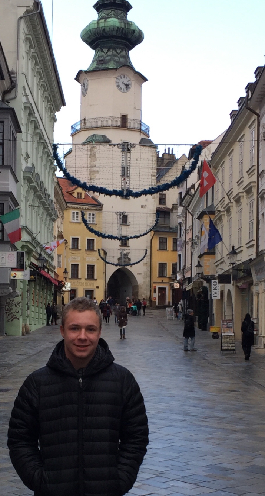

About
Thanks for taking the time to visit my website! Learn more about me and my interests here.
I am a Computer Science student in my final semester at North Carolina State University. I have verbally
accepted a job with Sollers Consulting as a software developer in Warsaw, Poland.
Currently, I consider my specialities to be focused in backend development, with a concentration in Cybersecurity.
My two major aspirations as a programmer are to refine my skills in front-end development in order to be a true
full stack developer, and to move to a software engineering role opposed to just a software developer.

Aside from programming, I have several hobbies that I am very passionate about. I am the type of personality that enjoys building on long projects over time and cultivating progress through patience and investment. The greatest hobby of mine is learning languages. I speak english, french, and polish, and I have ideas of beginning either russian or german in the near future. All translations on this site are done by me (translated pages not implemented yet).
My second major hobby is the sport of powerlifting. Videos of my lifting can be found here. My current best lifts are a 210kg squat, 135kg bench press, and 230kg deadlift. My goal in powerlifting is to qualify for the European Championship in the EPF.
Aside from programming, I have several hobbies that I am very passionate about. I am the type of personality that enjoys building on long projects over time and cultivating progress through patience and investment. The greatest hobby of mine is learning languages. I speak english, french, and polish, and I have ideas of beginning either russian or german in the near future. All translations on this site are done by me (translated pages not implemented yet).
My second major hobby is the sport of powerlifting. Videos of my lifting can be found here. My current best lifts are a 210kg squat, 135kg bench press, and 230kg deadlift. My goal in powerlifting is to qualify for the European Championship in the EPF.